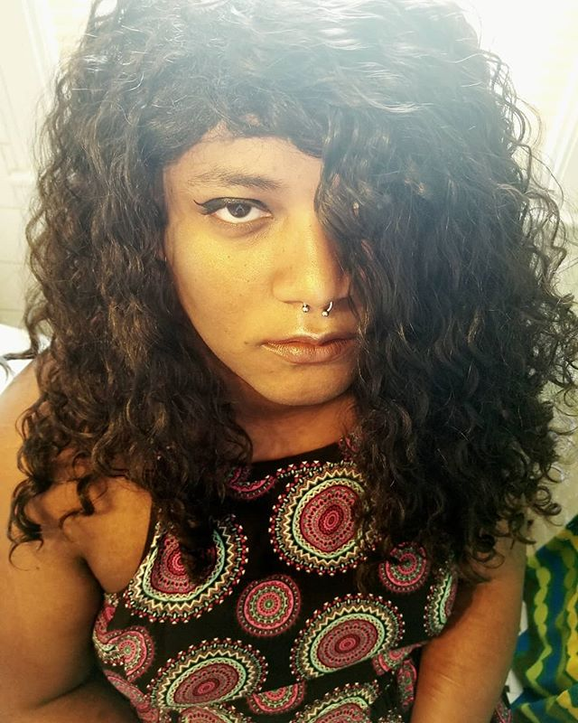

About Me

Stats
- Tora Ahmanet Brumalis
- Black
- Demiflux (Nonbinary)
- Trans Woman ⚧
- 27
- Lesbian ⚢
- Disabled/Neuroqueer
| Sun [☉] | Moon [☽] | Ascendant [Asc] |
|---|---|---|
| Sagittarius [♐] | Virgo [♍] | Scorpio [♏] |